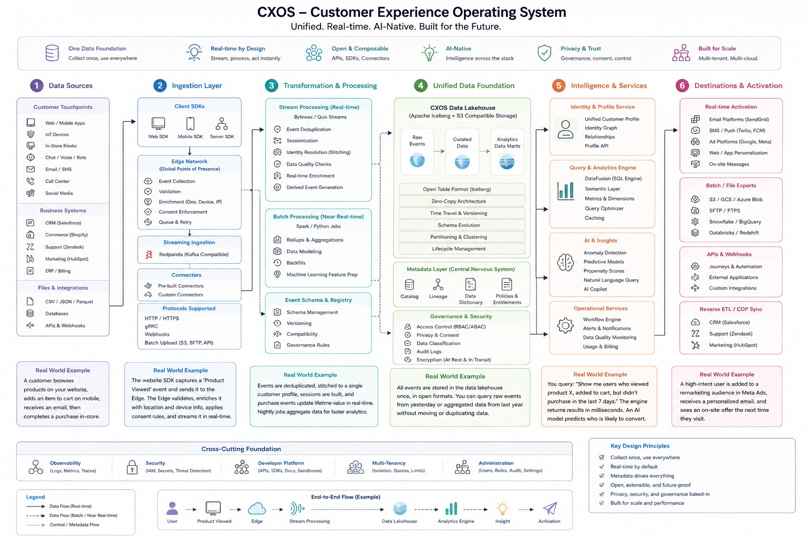

Application Design & Tech Stack
CXOS — Customer Experience Operating System
Unified. Real-time. AI-Native. Built for the Future. This reference walks through the six-stage architecture that takes an event from a customer touchpoint all the way to real-time activation.
Every enterprise today runs on a patchwork of systems — a website, a mobile app, a CRM, a support desk, a call center, a dozen SaaS tools — each holding a different sliver of the same customer relationship. Marketing sees one version of the customer, support sees another, and no one sees the whole picture in time to act on it.
CXOS exists to close that gap: a single, real-time operating system that collects every interaction once, resolves it to one unified profile, and makes it usable everywhere it needs to show up — a personalized email, a support agent's screen, a machine learning model — without a dozen teams maintaining a dozen disconnected pipelines.
This site is both the architecture reference and the build plan for the engineering teams implementing it. Each of the six stages below is worked through as a concrete, implementable design: real .NET Core microservices on Azure, a shared NuGet-based ingestion contract every integration speaks, an open Iceberg lakehouse queryable by any engine, and dbt-modeled, AI-ready data underneath it all. All six stages are fully specified today, down to sample payloads and enterprise walkthroughs. Treat this as a living technical handbook — the plan is to keep it exactly as detailed as the code it's meant to guide.
Architecture at a Glance
Full end-to-end diagram — click to zoom.

Source diagram: doc/img/cxos-architecture.jpeg
The Six Verticals
Each vertical below drills down into its own reference page with submodules and a real-world example.
Data Sources
Every customer touchpoint, business system, and file feed that produces raw events.
Ingestion Layer
SDKs, edge network, and connectors that collect, validate, and route events in real time.
Transformation & Processing
Stream and batch processing that dedupes, stitches identity, and models data for use.
Unified Data Foundation
The CXOS Data Lakehouse — one copy of data, open formats, full governance.
Intelligence & Services
Identity, query, AI, and operational services layered on top of the foundation.
Destinations & Activation
Real-time and batch delivery to the platforms where customer experience happens.
Full Application Service Map
Every deployable microservice across the six stages, and the database purpose-picked for its access pattern — one size does not fit all. Full DDD/CQRS breakdown lives in the BRD.
📥 Ingestion
Cxos.Ingestion.Api
⚙️ Event Processing
Cxos.Processing.Api
📋 Schema Governance
Cxos.Processing.SchemaGovernance.Api
🏛️ Data Foundation & Governance
Cxos.Foundation.Api
🥤 Customer Profile
Cxos.Profile.Api
🧠 Analytics & AI Insights
Cxos.Intelligence.Api
🛠 Operational Services
Cxos.Operations.Api
📡 Activation
Cxos.Activation.Api
End-to-End Flow (Example)
How a single product-view event travels through this reference implementation's stack — Angular, .NET Core microservices on Azure, and PostgreSQL.
A customer views a product on the Angular storefront. Angular POSTs a ProductViewed event, via the shared Cxos.Ingestion.Client contract, to a .NET Core Web API ingestion endpoint — packaged as a Docker container on AKS, fronted by Azure API Management. The API publishes the event onto Azure Event Hubs; a .NET Core worker service (IHostedService) consumes it, deduplicates and enriches it, and persists it to PostgreSQL as the system of record. A .NET Core analytics API queries PostgreSQL (materialized views / window functions) to compute a propensity score, and the resulting insight triggers a .NET Core activation service — via Azure Service Bus — that sends a personalized email. Application Insights carries one distributed-tracing correlation ID through every hop, so if any step fails, the exception shows up already linked to the exact request that caused it.
Also Used Across the Platform
The Five Horizontals
Cross-cutting capabilities that run horizontally beneath every vertical above.
Observability
Logs, Metrics, Traces
Security
IAM, Secrets, Threat Detection
Developer Platform
APIs, SDKs, Docs, Sandboxes
Multi-Tenancy
Isolation, Quotas, Limits
Administration
Users, Roles, Audit, Settings
Key Design Principles
- Collect once, use everywhere
- Real-time by default
- Metadata drives everything
- Open, extensible, and future-proof
- Privacy, security, and governance baked-in
- Built for scale and performance
Legend
- Data Flow (Real-time)
- Data Flow (Batch / Near Real-time)
- Control / Metadata Flow